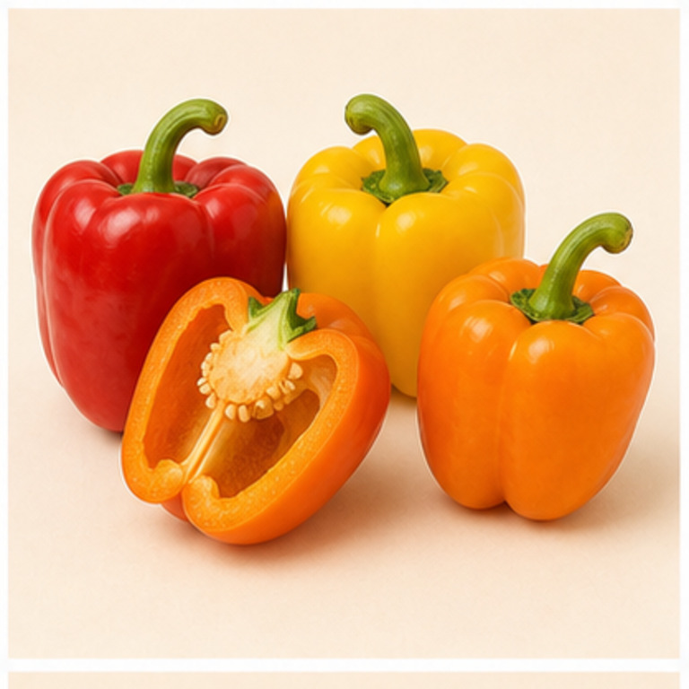
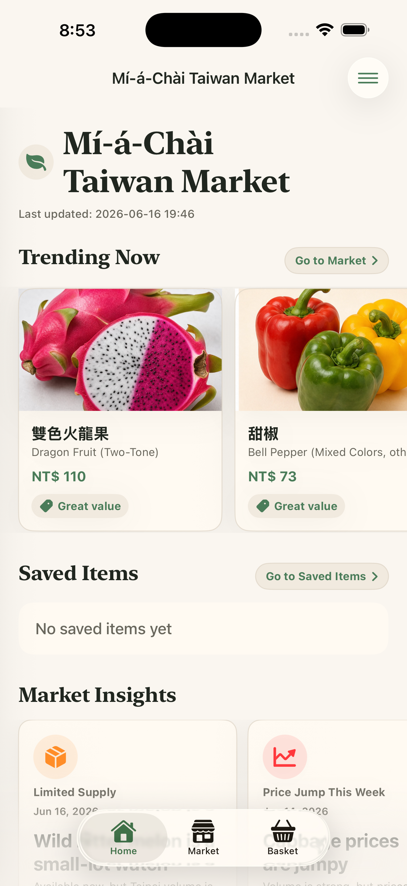
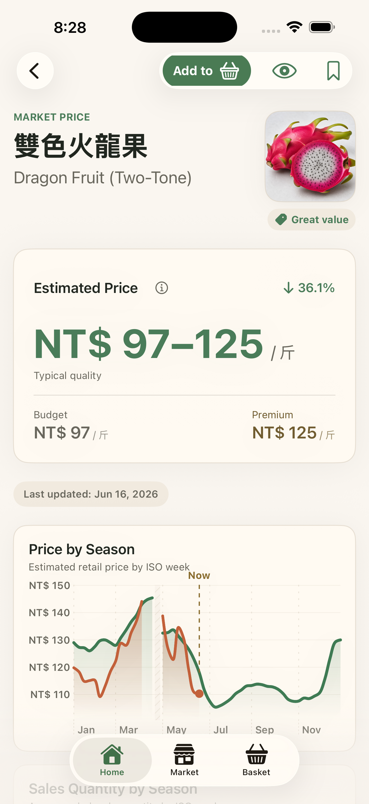
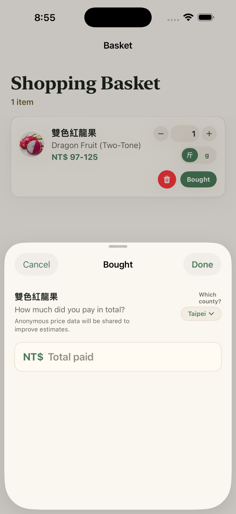

Fair-price ranges
See estimated retail prices per 斤, with current market signals for value, high prices, limited supply, and seasonal availability.
Taiwan wet-market price guide
Check whether a produce price looks fair before you buy. The app turns Taiwan wholesale market records, retail calibration data, and seasonality into shopper-facing NT$/斤 estimates.



What it helps with
See estimated retail prices per 斤, with current market signals for value, high prices, limited supply, and seasonal availability.
Search produce by common Mandarin names, official crop names, English names, aliases, and varieties.
Save items while shopping and optionally submit what you paid, so future estimates can improve without creating an account.
Data basis
Mí-á-Chài Taiwan Market uses Taiwan Ministry of Agriculture wholesale market records, historical price distributions, and public retail survey calibration. It is a shopping reference, not an official government app and not an e-commerce service.
